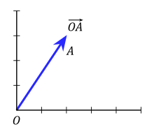
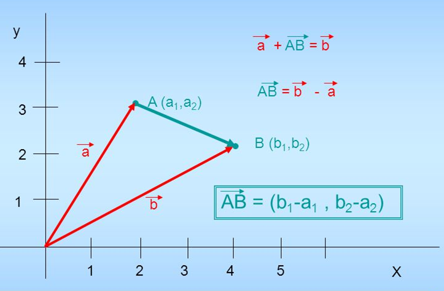
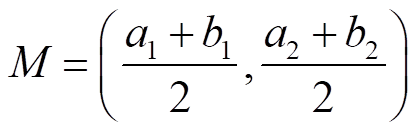

Un sistema de referencia del plano euclídeo {O;i,j} está formado por un punto O llamado origen, en nuestro caso el (0,0), y un par de vectores que formen base, en nuestro caso los de la base canónica i y j.
El vector de posición de un punto A es el que tiene su origen en O y su extremo en A. Las coordenadas del punto P entonces son las del vector OA.

Entonces las coordenadas del vector AB son las del vector de posición de B menos las del de A:

De un modo similar podríamos calcular las coordenadas del punto medio, M, del segmento AB:

Ejercicio. Sean A(1,3) y B(-1,2). Calcula las coordenadas de:
a) el vector de posición de A, OA
b) el vector AB
c) el punto medio del segmento AB.
Soluciones: a) OA(1,3); b) AB(-2,-1); c) M(0,5/2)